음성신호 잡음 제거
2021년 2학기에 수강한 디지털신호처리 교과목에서 수행한 텀프로젝트입니다.
음성신호에 포함된 잡음을 제거하여 음성을 강조하도록 하는 것이 목표입니다.
모든 과정은 Python을 이용하여 구현하였습니다.
음성신호 원본 파일의 파형 일부입니다.
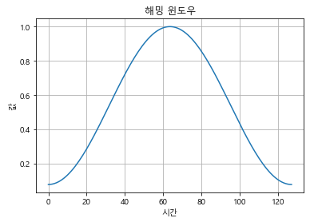원신호를 잘게 쪼개어 짧은 구간에서 잡음을 제거한 후 이를 다시 합쳐 전체적인 잡음을 제거하는 방식입니다.
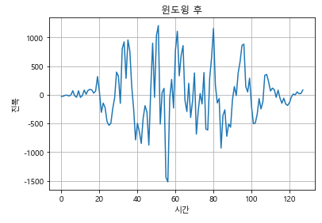전체 신호에 대해 일정 구간마다 50% 오버랩하여 해밍 윈도우로 윈도윙합니다.
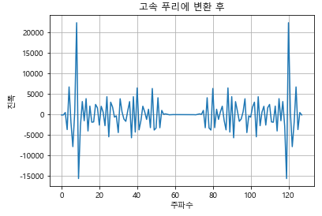윈도윙한 일부 신호를 고속 푸리에 변환합니다.
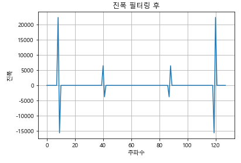일정 진폭 이하의 신호를 제거합니다.
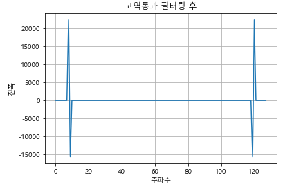음성신호의 주파수 대역 외 신호를 제거합니다.
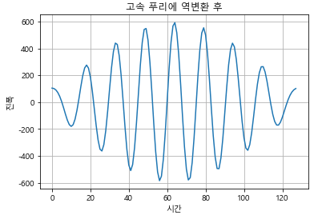잡음이 제거된 신호를 다시 고속 푸리에 역변환합니다.
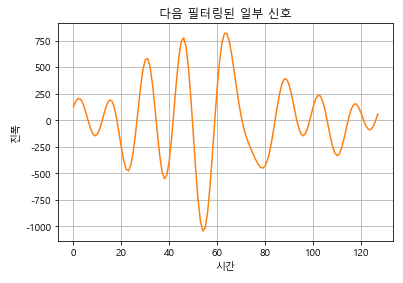다른 구간도 위와 동일한 과정으로 잡음을 제거합니다.
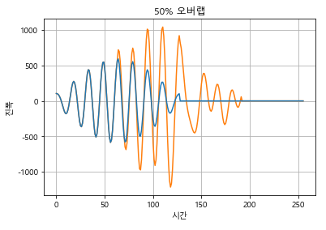잡음이 제거된 일부 신호를 50% 오버랩하여 다시 합칩니다.
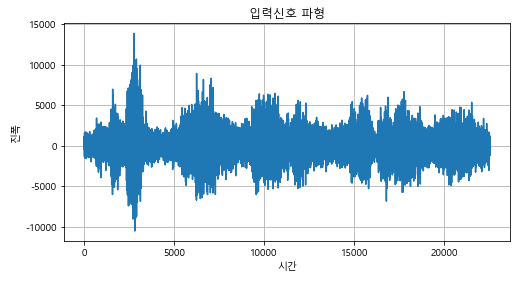 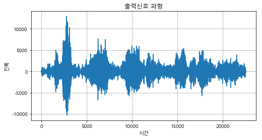입력신호와 출력신호의 파형 비교입니다.
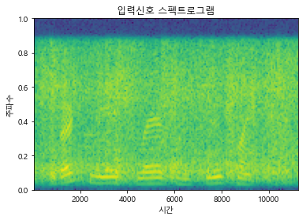 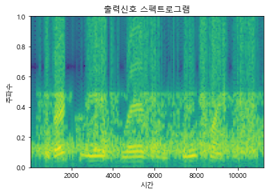입력신호와 출력신호의 스펙트로그램 비교입니다.
잡음이 제거되어 상대적으로 음성신호가 강조된 모습입니다.